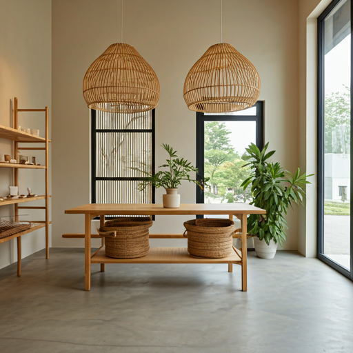

Nuestra Historia
ImportGiper es un bazar para el hogar que nació de la pasión por crear espacios cálidos para toda la familia. Fundado en 2020 por Tomas Agustin Perez, nuestra tienda se convirtió en un referente para quienes buscan productos únicos y de calidad. Desde nuestros inicios, nos hemos enfocado en ofrecer una amplia variedad de artículos de la mejor calidad que combinan todo lo que podes necesitar para un hogar , ya sea por su durabilidad como tambien por su estetica unica. Tenemos una seleccion cuidadosa de cada productos con altos estandares de calidad para que tu hogar siempre se vea bien. En ImportGiper, creemos que cada detalle cuenta y que los objetos que nos rodean pueden transformar un espacio en un hogar. Por eso, nos esforzamos por brindar una experiencia de compra personalizada y cercana, donde nuestros clientes puedan encontrar todo lo que necesitan para crear el ambiente que siempre soñaron. Nuestros valores fundamentales son la calidad, la innovación y el compromiso con nuestros clientes. Buscamos constantemente nuevas tendencias y productos que se adapten a las necesidades y gustos de cada persona. Además, nos preocupamos por ofrecer un servicio excepcional, desde la atención en tienda hasta el envío de los productos. En ImportGiper, no solo vendemos artículos para el hogar, sino que también compartimos nuestra pasión por el diseño y la decoración. Queremos ser parte de la creación de hogares felices y llenos de vida.
